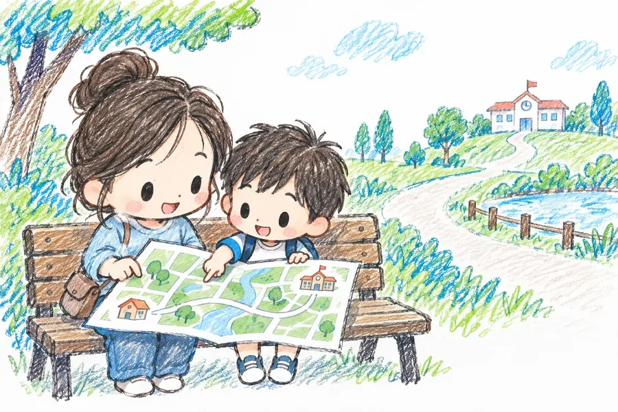
1회지리지도 속 거리는 어떻게 알 수 있을까?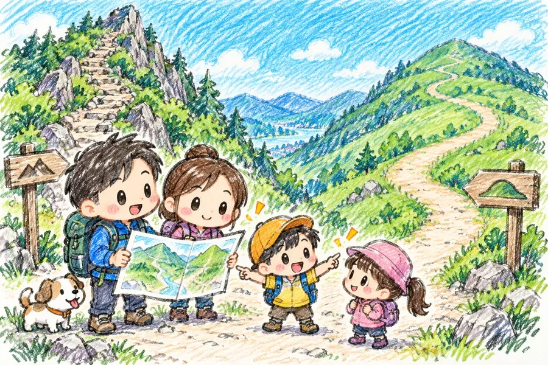
2회지리등고선으로 산의 모습을 알 수 있을까?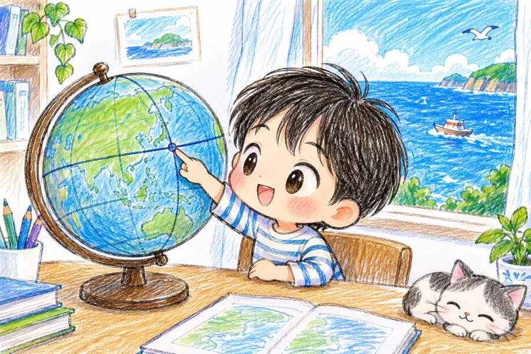
3회지리위도와 경도는 왜 필요할까?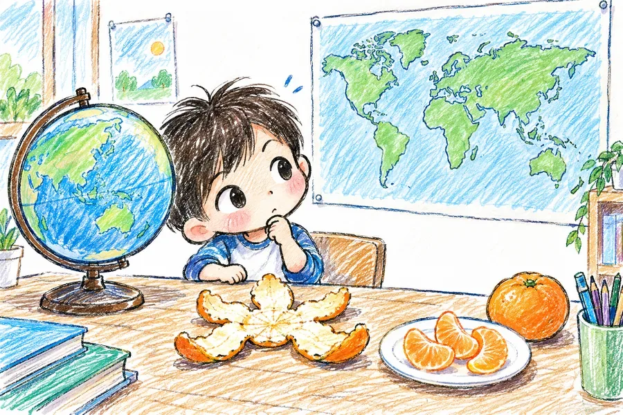
4회지리세계지도는 지구와 똑같을까?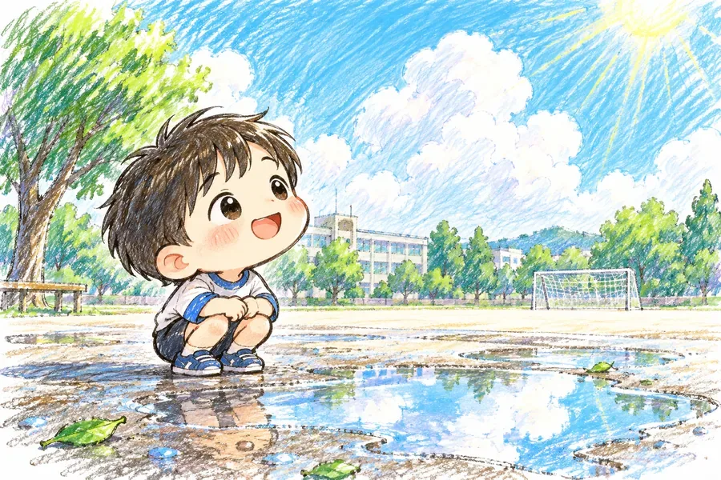
5회과학구름은 어떻게 만들어질까?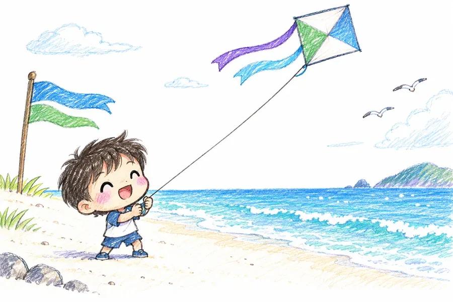
6회과학바람은 왜 불까?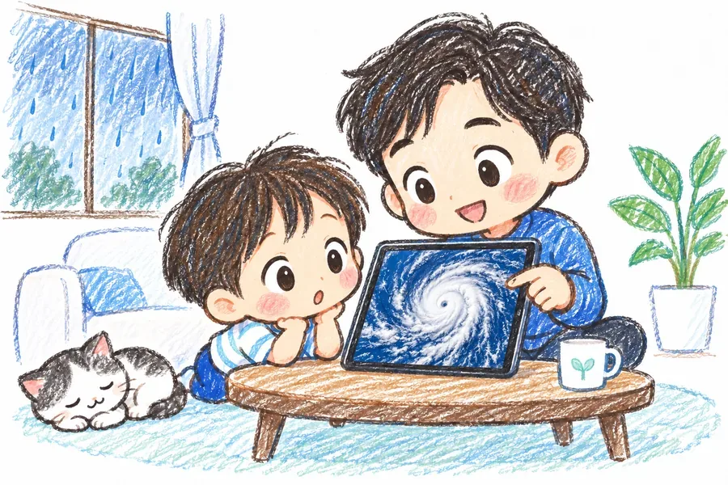
7회과학태풍은 어떻게 힘을 얻을까?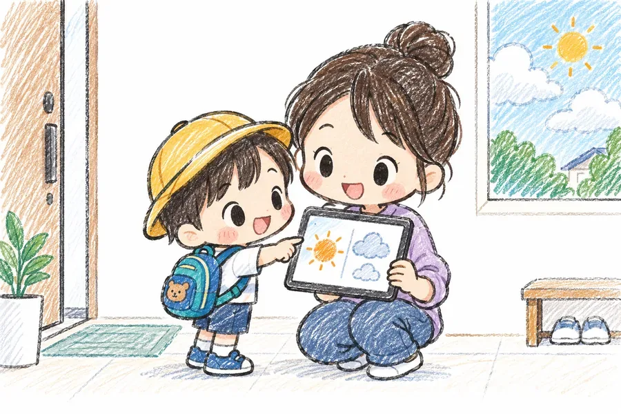
8회과학일기예보는 어떻게 만들어질까?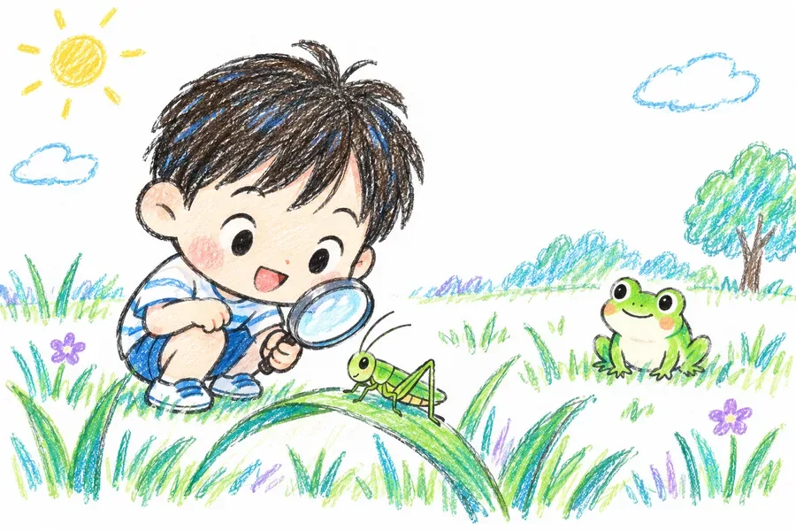
9회과학먹이사슬은 어떻게 이어질까?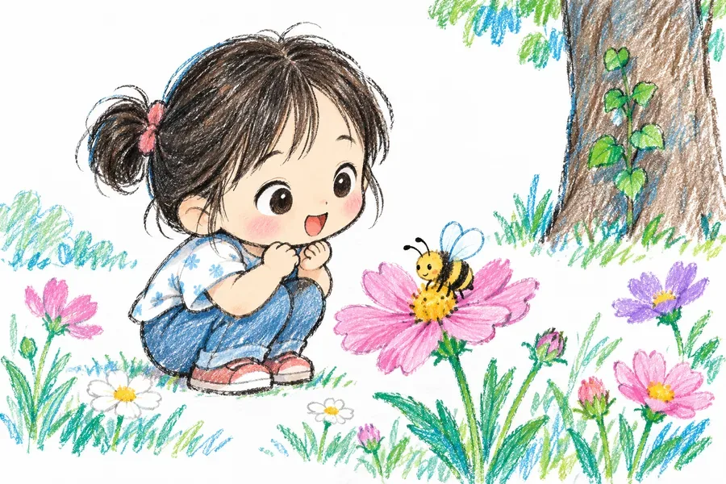
10회과학공생은 모두 서로 돕는 관계일까?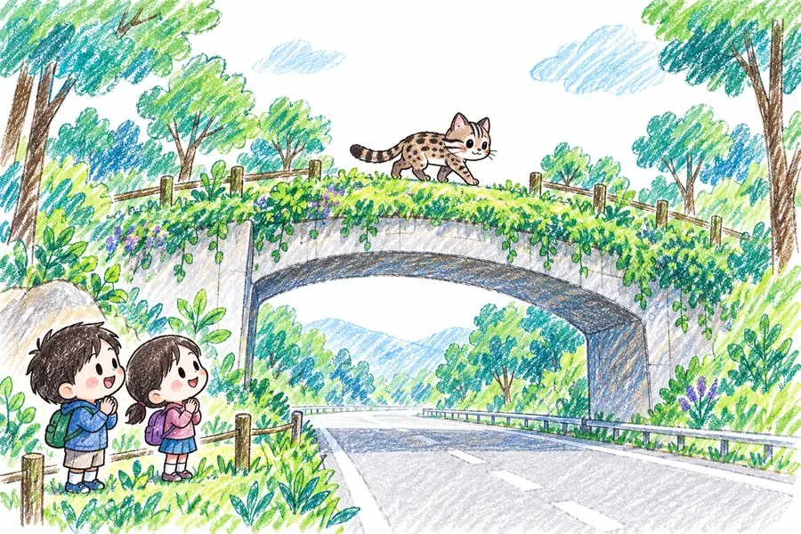
11회과학멸종위기동물은 왜 생길까?12회과학씨앗은 어떻게 여행할까?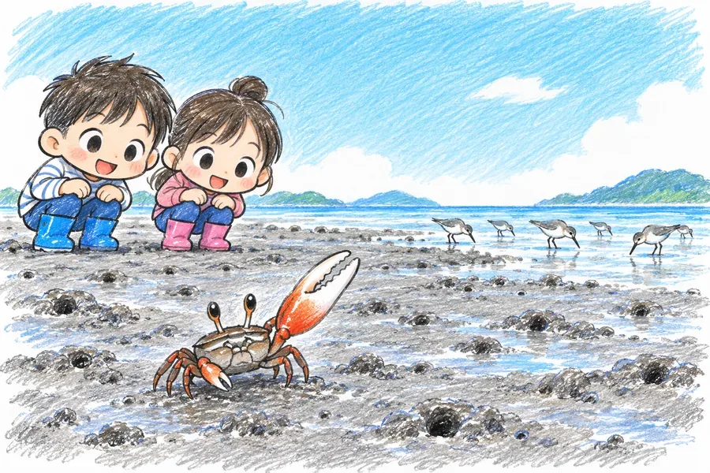
13회과학갯벌에는 누가 살까?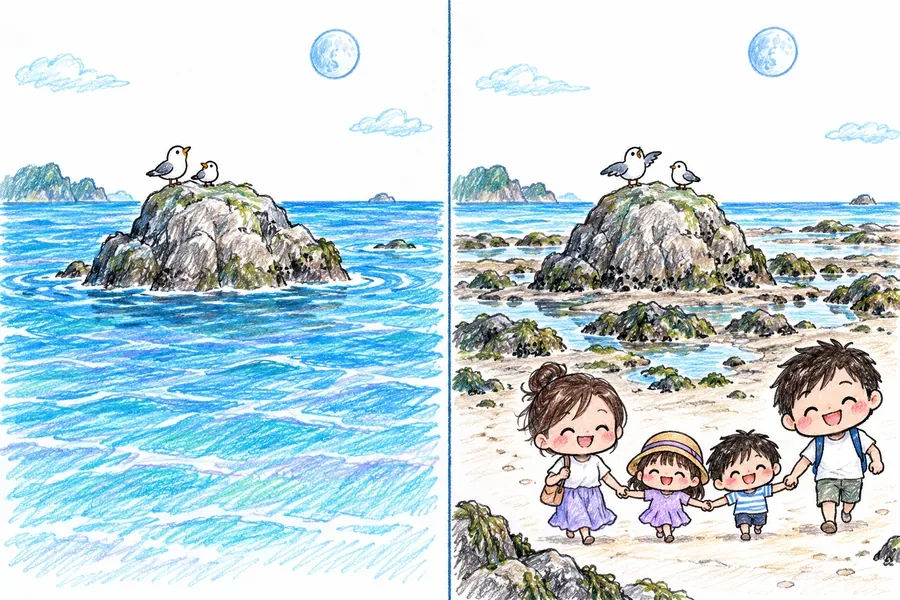
14회과학밀물과 썰물은 왜 생길까?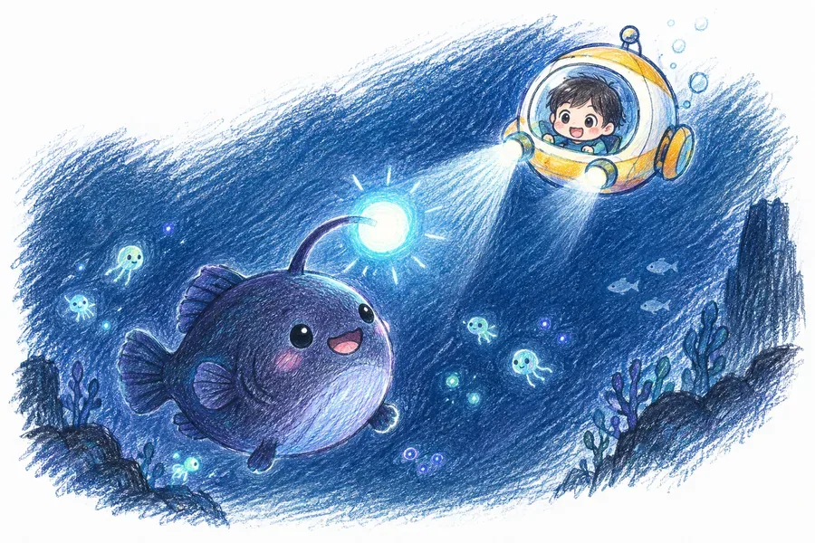
15회과학심해에는 어떻게 생물이 살까?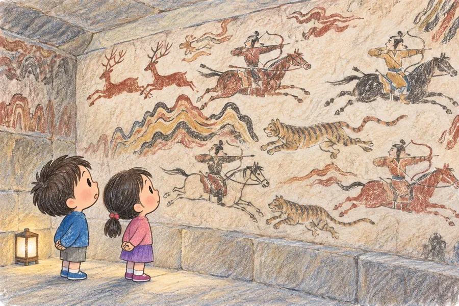
16회역사고구려 벽화에는 무엇이 그려져 있을까?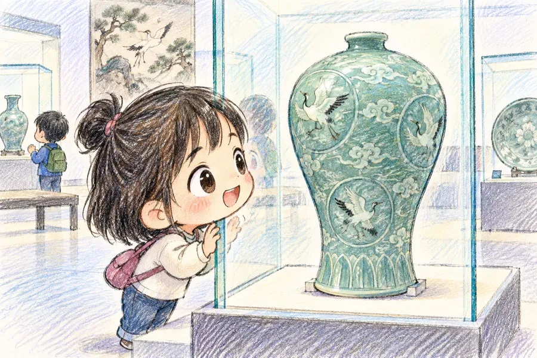
17회역사고려청자는 왜 푸른빛이 날까?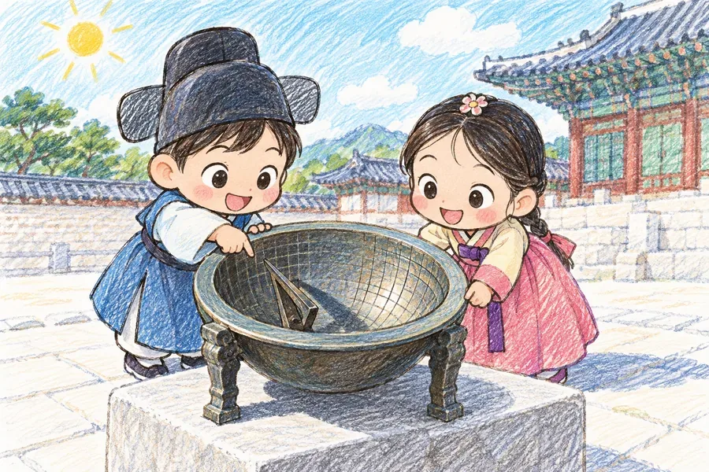
18회역사옛날 사람들은 시간을 어떻게 알았을까?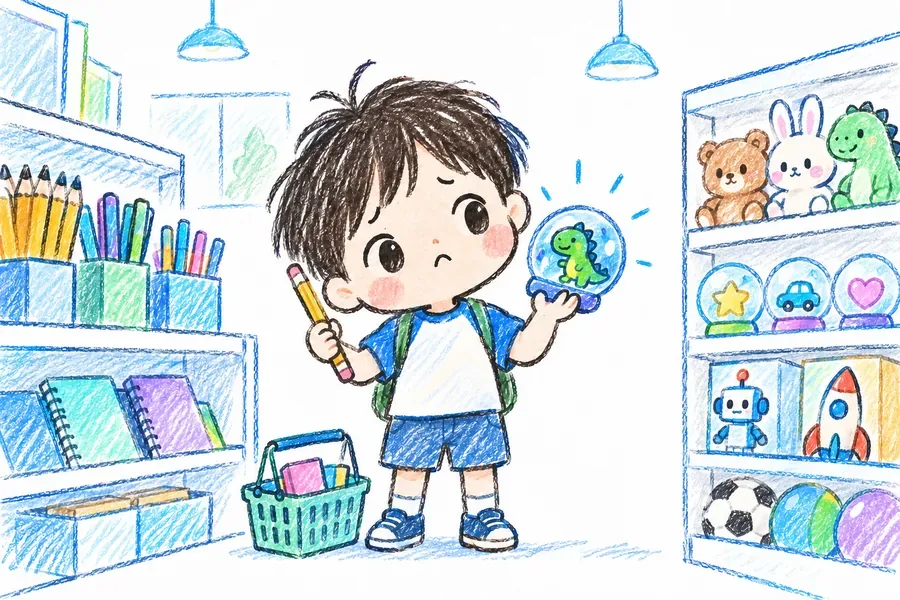
19회경제사고 싶은 것은 모두 사도 될까?20회경제돈은 왜 생겼을까?